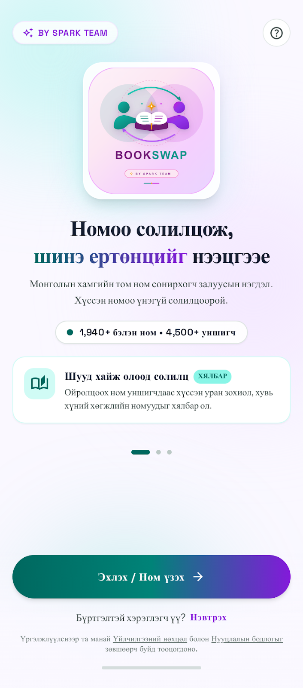
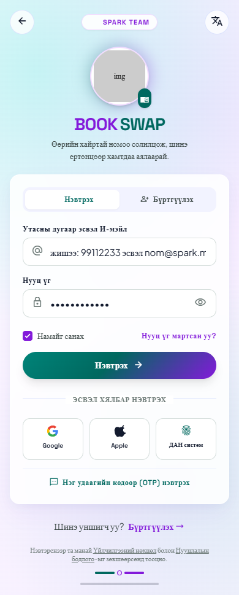
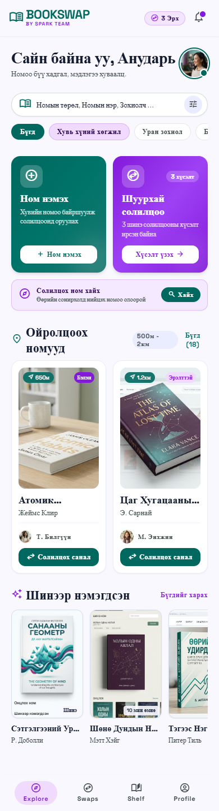
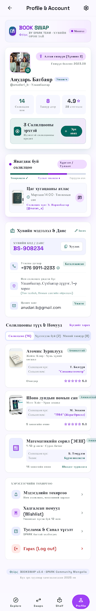
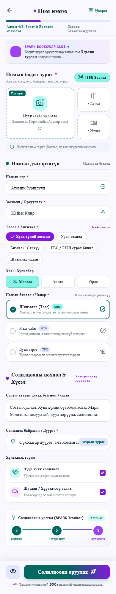
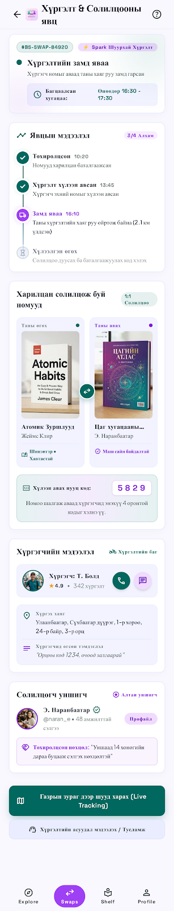
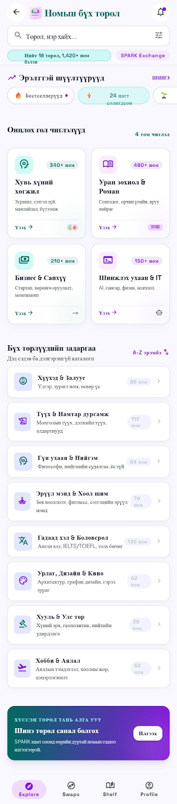

BookSwap Ном солилцооны шинэ соёл
Уншсан номоо хуваалцаж, шинэ ертөнцийг нээ — орчин үеийн уншигчдад зориулсан дижитал солилцоо, олон нийтийн экосистем.
BookSwap — Vibrant Literary Pulse
Ном уншигчдыг хооронд нь холбож, номын эргэлтийг сайжруулах, уншсан номыг дахин ашиглалтад оруулж боловсролын хүртээмжийг нэмэгдүүлэх.
Концепцийн шийдэл
Уншлагын таатай мэдрэмжийг орчин үеийн динамик өнгө, цэвэрхэн типографитай хослуулсан шинэлэг загвар.
Логоны бэлгэдэл
Ном болон солилцооны (swap) 2 талт сумыг нэгтгэсэн цээжлэхэд хялбар, найрсаг минимал дүрслэл.
Хурдан бөгөөд хялбар эхлэл
Хэрэглэгчийн анхны сэтгэгдэл болон нэвтрэх туршлагыг хамгийн бага үрэлттэй (frictionless) байхаар шийдсэн.
3 энгийн алхам (Welcome Onboarding)
Аппликейшны үндсэн үнэ цэнэ, ном солилцох давуу талыг цөөн секундийн дотор ойлгомжтой танилцуулна.
Цэвэрхэн форм & Сошиал нэвтрэлт
Имэйл болон Google, Apple бүртгэлээр 1 товшилтоор түргэн, аюулгүй нэвтрэх бүрэн боломжтой.
Шууд ашиглалт & Ойлгомжтой UI
Шинэ хэрэглэгч системд төөрөхгүйгээр шууд сонирхсон номоо хайж, солилцож эхлэх нөхцөлийг бүрдүүлсэн.


Нүүр дэлгэц & Номын дэлгэрэнгүй
Нүүр дэлгэц ба Санал болгох хэсэг
Шинээр нэмэгдсэн номууд, тренд ангилал болон уншигчийн сонирхолд нийцсэн ухаалаг зөвлөмжүүд нэг дор ил харагдана.
Номын дэлгэрэнгүй цэс
Номын нүүр зураг, товч агуулга, хуудасны тоо, эзэмшигчийн үнэлгээ, байршил болон одоогийн бэлэн байдлын төлөв.
Солилцох хүсэлт илгээх (CTA)
Үйлдлийн товчийг дэлгэцийн доод хэсэгт эргономик байдлаар оновчтой байршуулж, уншигчдын харилцааг хурдасгасан.


Ном солилцоо & Чат систем
Хоёр уншигчийн хоорондох хэлэлцээрийг хялбарчилж, аюулгүй, итгэлтэй орчинд номоо сонгох боломж олгоно.
Солилцооны санал илгээх
Өөрийн нэмсэн номнуудаас шууд сонгон хариу санал тавих уян хатан интерфейс.
Баталгаажуулалт ба Бодит цагийн чат
Уулзах байршил, цаг эсвэл хүргэлтийн нөхцөлөө хэрэглэгчид хоорондоо шууд тохиролцоно.
Аюулгүй, итгэлтэй орчин
Багш, сурагчид болон хамт олны дунд аюулгүй харилцаа, спам хамгаалалт, ёс зүйн хяналттай.

Бодит цагийн хяналтын систем
Ном солилцооны бүх шат дамжлагыг ил тод, бодит цагт хянах 4 үе шаттай урсгал:
1. Хүсэлт илгээсэн
Ном солилцох санал илгээгдэж, системийн санал хүсэлтийн жагсаалтад орно.
2. Баталгаажсан
Номын эзэн хүсэлтийг шалгаж зөвшөөрснөөр солилцооны гэрээ баталгаажна.
3. Хүргэлтэд гарсан (Live Tracking)
Ном хүргэлтийн замд шилжин хүргэгчийн дугаар, газрын зургийн байршлыг хянана.
4. Хүлээн авсан
Хүлээн авснаар солилцоо амжилттай хаагдаж үнэлгээ өгөх боломж нээгдэнэ.
Солилцооны бүрэн түүх, баталгаажсан хүргэлт болон одтой үнэлгээ.

Платформын хөгжүүлэлт болон бета туршилтын төлөвлөгөө
Энгийн, ойлгомжтой, хурдан ажиллагаатай UI/UX. Бүх шатны хэрэглэгчдэд тохирсон хүртээмжтэй шийдэл.
Frontend болон Backend интеграцчилал хийж, сургуулийн сонгогдсон бүлгүүдийн дунд бета туршилтыг эхлүүлэх.
Сургуулийн орчинд ном унших соёлыг шинэ түвшинд гаргаж, нийгэмд эерэг ногоон хэрэглээг түгээн дэлгэрүүлэх.
